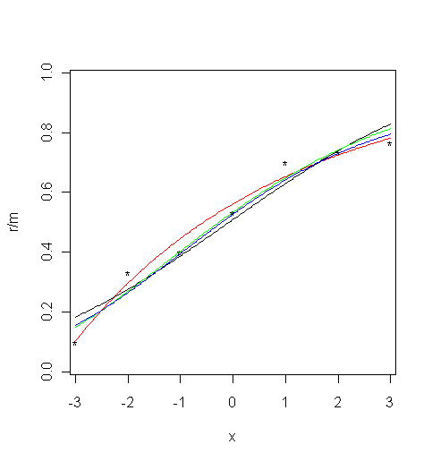

Model-free estimation of a psychometric function |
|
|---|---|
| Home | Downloads | Demonstration | Documentation | Examples | Functions | Contacts |
|---|
Levi, D. M. & Tripathy, S. P. “Is the ability to identify deviations in multiple trajectories compromised by amblyopia?”, Journal of Vision, 6(12), 1367-1379, 2006.
MatLab R The subject was presented with the image of a dot moving rightwards on a linear path until it reached the midline of the display, when it changed direction either upwards or downwards. The subject had to indicate the direction. The symbols in the figure below show the proportion of correct responses in 30 trials as the deviation varied from –3 to 3 units.
Parametric and local linear fitting
Three different parametric models and the local linear fitting are used and fits are plotted against the measured psychometric data. Three different parametric models are fitted to these data: Gaussian (probit), Weibull, and reverse Weibull. Local linear fitting is also performed with the bandwidth
bwdchosen by the minimising cross-validated deviance.Load the data and plot the measured psychometric data (black dots):
data("02_Levi")
x = example02$x
r = example02$r
m = example02$m
plot( x, r / m, xlim = c( -2.87, 2.87 ), ylim = c( 0.03, 0.97 ), type = "p", pch="*" ) # Limits set to match the MatLab ones1. For the Gaussian cumulative distribution function (black curve):
val <- binomfit_lims( r, m, x, link = "probit" )
# Plot the fitted curve
numxfit <- 199 # Number of new points to be generated minus 1
xfit <- (max(x)-min(x)) * (0:numxfit) / numxfit + min(x)
pfit<-predict( val$fit, data.frame( x = xfit ), type = "response" )
lines(xfit, pfit )2. For the Weibull function (red curve):
val <- binom_weib( r, m, x )
# Plot the fitted curve
pfit<-predict( val$fit, data.frame( x = xfit ), type = "response" )
lines(xfit, pfit, col = "red" )3. For the reverse Weibull function (green curve):
val <- binom_revweib( r, m, x )
# Plot the fitted curve
pfit<-predict( val$fit, data.frame( x = xfit ), type = "response" )
lines(xfit, pfit, col = "green" )4. For the For the local linear fit (blue curve):

bwd_min <- min( diff( x ) )
bwd_max <- max( x ) - min( x )
bwd <- bandwidth_cross_validation( r, m, x, c( bwd_min, bwd_max ) )
# Plot the fitted curve
bwd <- bwd$deviance # choose the estimate based on cross-validated deviance
pfit <- locglmfit( xfit, r, m, x, bwd )$pfit
lines(xfit, pfit, col = "blue" )